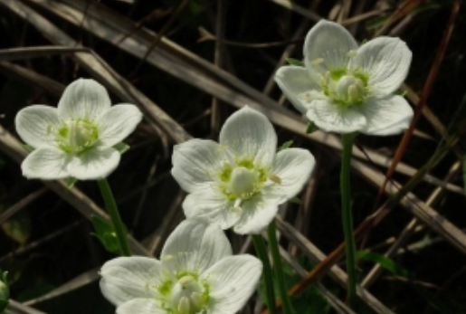
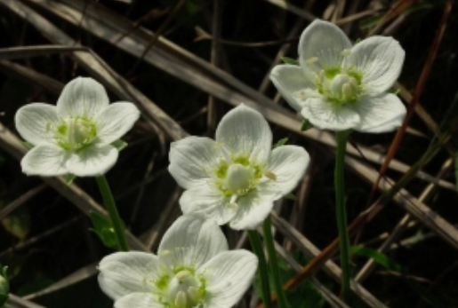

梅花草，实际为虎耳草科多年生草本植物，与梅花并不是近亲关系，之所以叫梅花草，纯粹是因为这种植物开的花和梅花非常相似而已。全草可入药，具有有清热解毒，止咳化痰的功效。下面介绍梅花草的详细资料。

梅花草，实际为虎耳草科多年生草本植物，与梅花并不是近亲关系，之所以叫梅花草，纯粹是因为这种植物开的花和梅花非常相似而已。全草可入药，具有有清热解毒，止咳化痰的功效。下面介绍梅花草的详细资料。

形态特征
这种草本植物最高可达30-50cm，叶柄长2.5-6cm，根茎较短，接近于球形;叶片是卵圆形至心形，直径长1-3cm，宽1.5-3.5cm;在花茎中生1无柄的叶片，与基生叶同形。
它的花单生于顶端，是白色至浅黄色，直径达2-3.5cm，形似梅花的样子;有5萼片，是椭圆形，长约5mm;而花瓣也是5，平展呈卵状圆形，长约1cm;雄蕊5，与花瓣互生;假雄蕊5，上半部11-22丝裂，裂片先端有头状腺体;心皮4，合生，子房上位，卵形;花柱极短，顶端4裂。蒴果，上部4裂。它的花期是在7-8月，而果期则是在8-9月。
生长环境及分布
梅花草主要分布于在东北、华北及陕西的甘肃、青海等地，适宜生长在山坡、林边、山沟、湿润草地。
【性味】：味苦，性凉。
【归经】：入肺、肝、胆经。
【功效】：清热凉血，解毒消肿，止咳化痰。
【主治】：黄疸型肝炎，细菌性痢疾，咽喉肿痛，脉管炎，疮痈肿毒，咳嗽痰多。
【附方】
1、治黄疸型肝炎，梅花草15g，小白蒿、秦艽、黄柏、红花各6g，五灵脂、广木香各3g。共研细末。每服3-4.5g，每日3次，白糖水送服。（《内蒙古中草药》）
2、治急性细菌性痢疾，梅花草15-30g。水煎服。（《全国中草药汇编》） 用法用量 内服：煎汤，3-9g；或研末，每次1-3g。 炮制 采集加工：夏季开花时采收，洗净晾干。
药材性状鉴别
根茎呈不规则团块状，褐色，有多数须根。茎圆柱形，长3-27cm，直径1-2mm，有纵棱，质脆，易折断。基生叶褐色，多破碎，完整叶片呈卵圆形或心形，长1-3cm，宽0.5-2.5cm，全缘，叶柄较长。茎生叶1枚，形同基生叶，无柄。花黄色，单生茎顶。气微，味甘。
北重楼，多年生直立草本，高25-60cm。根茎细长，直径3-5mm。茎绿白色，有时带紫色。叶6-8枚轮生，具短柄或近无柄；叶片被针形、狭长圆形、倒被针形或倒卵状披针形，长7-15cm，宽1.5-3.5cm，先
蒲公英属（学名：Taraxacum）植物通称蒲公英、黄花地丁、婆婆丁，华花郎、蒲公草、食用蒲公英、尿床草、西洋蒲公英，为菊目菊科的一属，是温带至亚热带常见的一种植物。蒲公英采孤雌生殖，叶边的形状像狮子的尖牙。其英文名字Dandelion来自法语dent-de-lion，正是狮子牙齿之意。
苋菜有“长寿菜”之称，平时在菜市场见到的有绿苋菜和红苋菜两种，一般在夏天，我们见的比较多是红苋菜，苋菜在营养师眼里是个大宝贝~对于小孩子的生长发育，和补钙都有很重要的意义~根据2017年中国食物营养成分表所示
鱼腥草又叫折耳根，是一个草药，其实很多人也把它当做一个蔬菜来吃。鱼腥草辛而微寒，鱼腥草归肺经，有清热解毒、消痈排脓的作用，同时鱼腥草有利尿通淋的作用。可用于肺部的疾患，如出现咳嗽、咳吐脓痰、肺炎、痰热导致的咳喘、热性的痢疾，以及泌尿系的感染出现的尿频、尿急、尿涩、尿痛等病症。下面就随小编一起来看看鱼腥草的功效与作用，鱼腥草的家常做法！
一般来说，植物药中质地较轻的花叶多有升浮的作用，如菊花、桑叶、辛夷花等;质地较重的果实等多有沉降的作用，如苏子、莱菔子、枳实等。但有一味花特立独行，不仅不升浮反而沉降，那就是旋覆花。
七七菜通常用凉血止血、祛瘀消肿等功效，临床上通过合理应用，可以改善身体疾病和症状，如通过七七菜可以调整血压，对于高血压人群合理使用对血压有一定帮助。七七菜也可以辅助治疗
扫帚菜是一种野生菜品，它是一种多年生的草本植物，经常出没在农村的田间地头、路边。在春天的时候，刚长出一截嫩苗，这时候可以当蔬菜食用，口感鲜嫩，特别美味。
香椿树在农村地区随处可见，或许你们称作它们为香棒头、香棒尖，每年春天香椿树刚发芽的时候就会被人们采摘食用，你可能只知道被称为“树上蔬菜”的它可以做成一道道美食，也有较高的药用价值，但在食用过程中的一些禁忌你真的知道吗？
进入4月份以后，能明显感觉到气温又上升了， 阴气下降，阳气上升，万物开始“吐故纳新”，大地一片绿油油的景象，尤其在一场小雨过后，植物肥嫩的茎叶，越发精神，清明节前后，除了扫
梅花草，实际为虎耳草科多年生草本植物，与梅花并不是近亲关系，之所以叫梅花草，纯粹是因为这种植物开的花和梅花非常相似而已。全草可入药，具有有清热解毒，止咳化痰的功效。下面介绍
 上一篇
上一篇